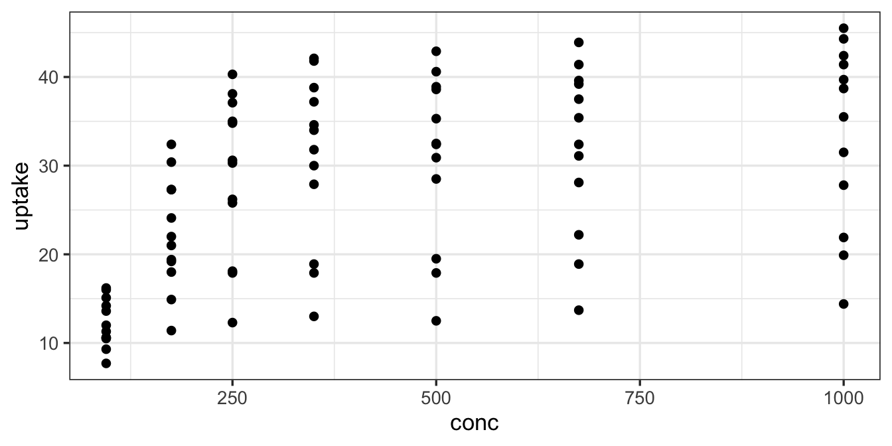
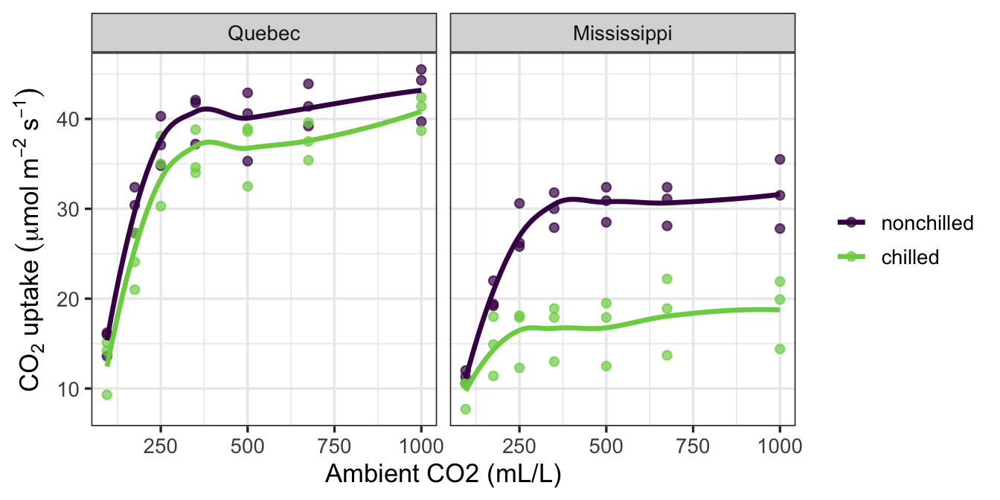
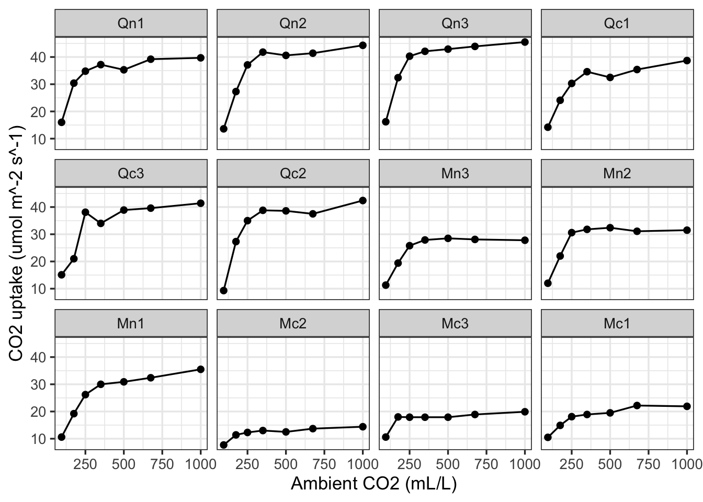
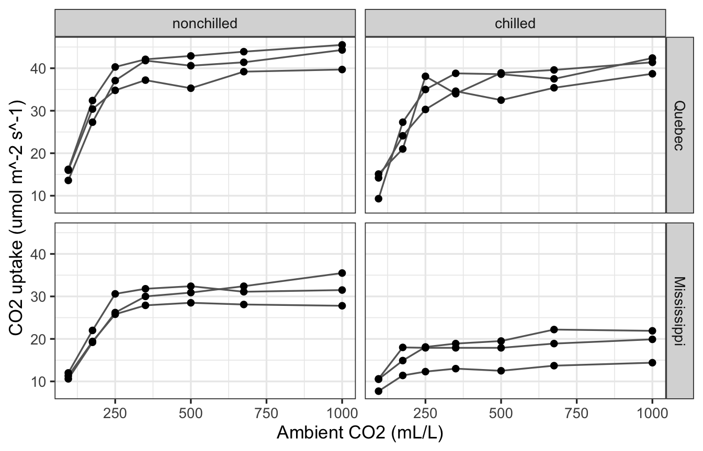
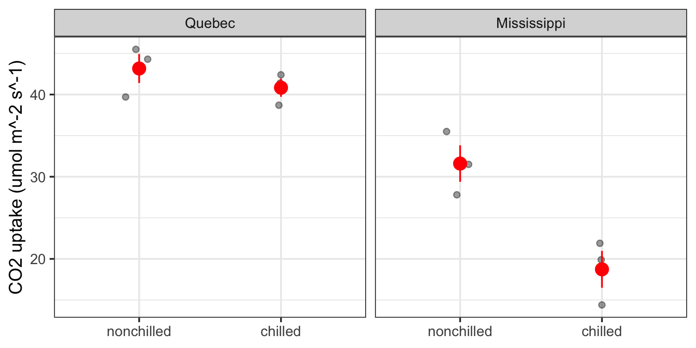
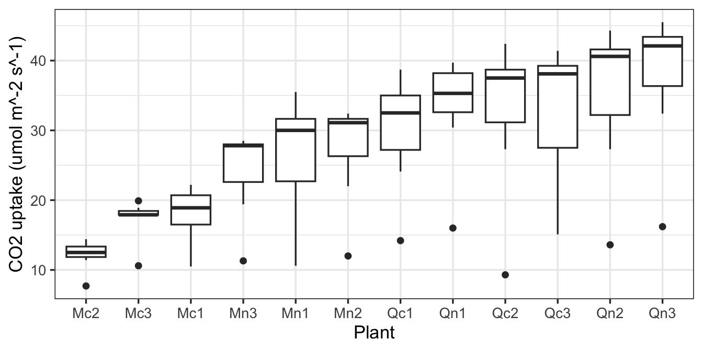
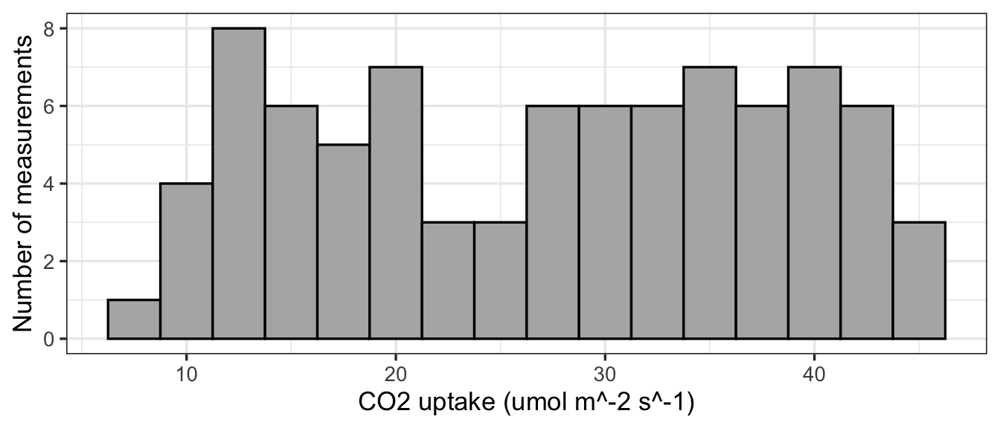

ggplot(data = CO2, aes(x = conc, y = uptake)) +
geom_point()
…in which we keep a short list of habits and recipes for making figures that are easy to read and honest about the data.
In this appendix, you will
ggplot2 recipes for the plots you will make most often.All examples use CO2, a data set that comes with R: CO2 uptake by the grass Echinochloa crus-galli from two origins (Quebec, Mississippi), chilled or not, across a range of ambient CO2 concentrations. Type ?CO2 to read about it.
uptake.scale_color_viridis_d()), and do not rely on red vs. green.theme_bw(base_size = 14) or larger for slides.| x variable | y variable | Start with | ggplot2 geoms |
|---|---|---|---|
| none | one continuous | histogram or density | geom_histogram(), geom_density() |
| categorical | continuous | points + box or mean | geom_jitter(), geom_boxplot(), stat_summary() |
| continuous | continuous | scatterplot | geom_point(), geom_smooth() |
| time | continuous | line + points | geom_line(), geom_point() |
| categorical | counts | bar chart | geom_bar() (counts), geom_col() (values you supply) |
A third variable goes to color =, shape =, or facet_wrap().
Every plot has the same three parts: the data, the aesthetic mapping (aes(), which says which column goes to which axis or color), and one or more geoms (the marks drawn). Everything else is optional polish.
ggplot(data = CO2, aes(x = conc, y = uptake)) +
geom_point()
Remember that aes() is for things that come from a column. A fixed setting goes outside it: geom_point(color = "blue"), not geom_point(aes(color = "blue")).
ggplot(CO2, aes(x = conc, y = uptake, color = Treatment)) +
geom_point(alpha = 0.7) +
geom_smooth(se = FALSE, method = "loess", formula = y ~ x) +
facet_wrap(~ Type) +
scale_color_viridis_d(end = 0.8) +
labs(x = "Ambient CO2 (mL/L)",
y = expression(CO[2]~uptake~(mu*mol~m^-2~s^-1)),
color = NULL)
alpha makes overlapping points visible.geom_smooth(method = "lm") gives a straight line instead of a curve.facet_wrap(~ Type) splits the plot into panels that share axes, which is usually easier to compare than many colors on one panel.facet_wrap() and facet_grid()Panels (“small multiples”) are often clearer than piling many colors onto one plot. Each panel uses the same axes, so the eye compares shapes rather than decoding a legend.
facet_wrap() takes one grouping variable and wraps its panels into rows and columns. Here each of the 12 plants gets its own panel:
ggplot(CO2, aes(x = conc, y = uptake)) +
geom_line() +
geom_point() +
facet_wrap(~ Plant, ncol = 4) +
labs(x = "Ambient CO2 (mL/L)", y = "CO2 uptake (umol m^-2 s^-1)")
facet_grid() crosses two grouping variables: rows by one, columns by the other. This is the natural layout for a two-factor experiment:
ggplot(CO2, aes(x = conc, y = uptake, group = Plant)) +
geom_line(color = "grey40") +
geom_point() +
facet_grid(Type ~ Treatment) +
labs(x = "Ambient CO2 (mL/L)", y = "CO2 uptake (umol m^-2 s^-1)")
facet_grid(rows ~ cols) as “rows by Type, columns by Treatment.” Use . ~ Treatment (or cols = vars(Treatment)) for columns only.group = Plant tells geom_line() to draw one line per plant instead of zig-zagging through every point in a panel.scales = "free_y" only when the groups differ so much in size that shared axes hide the pattern, and say so in the caption.labeller = label_both to show “Type: Quebec”) rather than explaining them in the caption.co2_high <- subset(CO2, conc == 1000) # one measurement per plant
ggplot(co2_high, aes(x = Treatment, y = uptake)) +
geom_jitter(width = 0.1, height = 0, alpha = 0.4) +
stat_summary(fun.data = mean_se, color = "red", size = 0.8) +
facet_wrap(~ Type) +
labs(x = NULL, y = "CO2 uptake (umol m^-2 s^-1)")
geom_jitter(width = 0.1, height = 0) spreads points sideways only a little, so they stay with their group, and never moves them up or down (which would change their y values).stat_summary() for geom_boxplot(outlier.shape = NA) to show medians and quartiles instead. (outlier.shape = NA stops outliers being drawn twice, since the jitter already shows them.)CO2 was measured at seven concentrations, so we kept one concentration; pooling all of them would treat 21 repeated measurements on 3 plants as 21 replicates.ggplot(CO2, aes(x = reorder(Plant, uptake, FUN = median), y = uptake)) +
geom_boxplot() +
labs(x = "Plant", y = "CO2 uptake (umol m^-2 s^-1)")
To set an order by hand, change the factor before plotting, e.g., factor(x, levels = c("low", "medium", "high")).
ggplot(CO2, aes(x = uptake)) +
geom_histogram(binwidth = 2.5, fill = "grey70", color = "black") +
labs(x = "CO2 uptake (umol m^-2 s^-1)", y = "Number of measurements")
Many ecological variables (body size, abundance, area) span orders of magnitude. Log the axis, not the column, so the tick labels stay in original units:
ggplot(df, aes(x = body_mass, y = metabolic_rate)) +
geom_point() +
scale_x_log10() +
scale_y_log10()labs(x = , y = , color = , title = ). In a report or this book, put the explanation in the figure caption and usually skip title.theme_set(theme_bw(base_size = 13)). theme_classic() and theme_minimal() are also clean.theme(legend.position = "bottom"); remove it with "none" when the facet labels or a caption already say what the colors mean.expression(), as in the scatterplot above: CO[2] is a subscript, m^-2 a superscript, mu gives a Greek mu, ~ is a space, and * joins without a space.umol, ~, and +/- rather than pasting special symbols such as degree signs or a micro sign into labels. Pasted symbols can silently disappear when a figure is saved to PDF; expression() draws them safely.Save with ggsave() into your figs/ folder, and set the size yourself so the text comes out the size you intended:
p <- ggplot(CO2, aes(x = conc, y = uptake)) + geom_point()
ggsave("figs/co2_uptake.png", plot = p, width = 6, height = 4, dpi = 300).png for slides and documents, .pdf when a journal or your instructor asks for vector graphics.base_size in the theme; do not just make the image bigger.ggplot2 reference pages, with an example for every function: https://ggplot2.tidyverse.org/reference/ggplot2 cheat sheet (search “ggplot2 cheat sheet”).